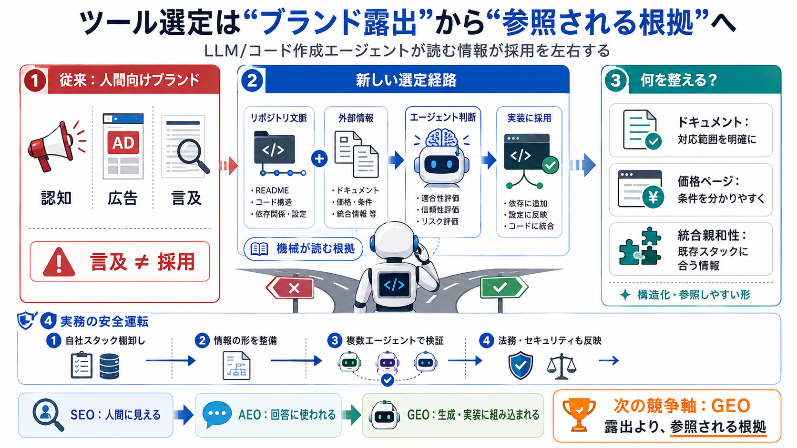

Claude Code vs Cursor: Which AI Coding Tool Is Better in 2026?
Not universally, but Claude Code is the stronger choice for terminal-first and highly autonomous workflows, while Cursor…

| 観測 | 含意 | 次の打ち手 |
|---|---|---|
| 言及回数が多いのに選ばれない | 意思決定の瞬間で評価される情報が別 | “参照されるドキュメント内容”へ |
| 言及はあっても採用が相対的に低い | エージェント/文脈相性が勝敗を左右 | 複数エージェント・複数文脈で検証 |
| 「調達が裏口から来る」現象 | ブランド露出は十分条件でない | 最適化の対象を“機械向け根拠”に |
Not universally, but Claude Code is the stronger choice for terminal-first and highly autonomous workflows, while Cursor…
Claude Code and Cursor are the two AI coding tools developers talk about most in 2026. Both are powerful. Both have agen…
### Cursor Cursor is an IDE itself, with agent(s) under the hood, unlike the many tools that are extensions to your exi…
The takeaway for a buyer is plain. The cleanest cross-tool signal is token economy and context retention on multi-file w…
Cursor is usually better if you want an AI-native IDE. Claude Code is often better for terminal-first supervised work. C…